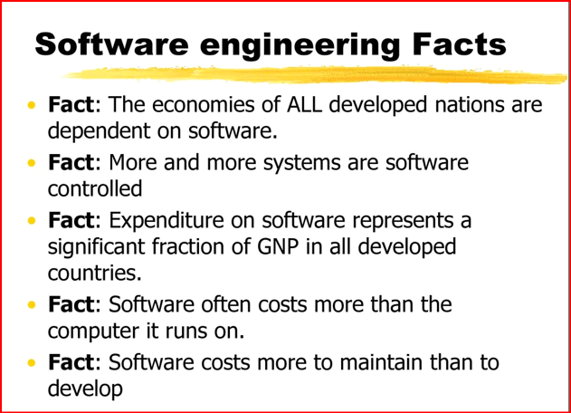
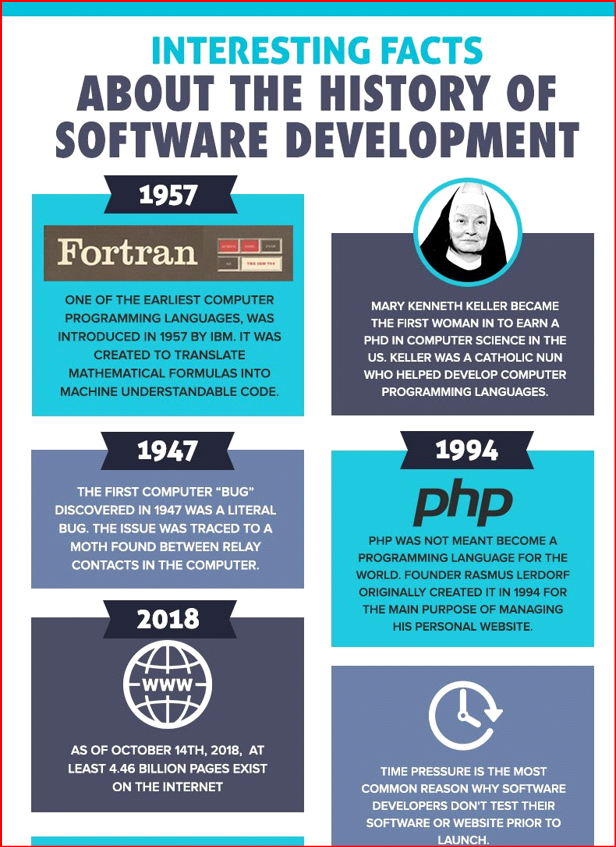
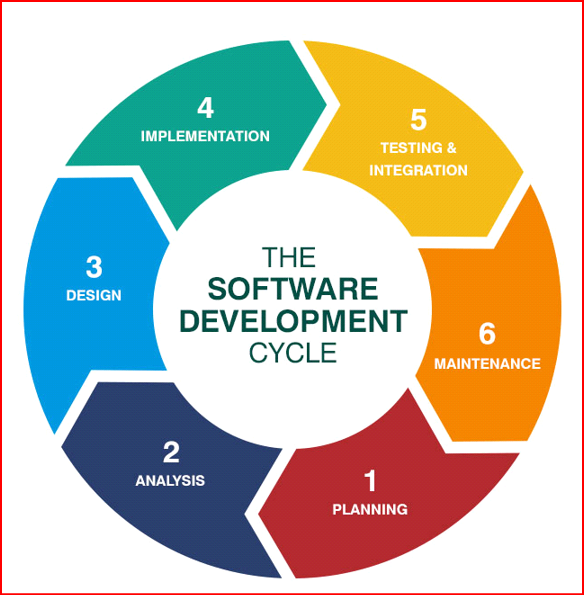

—Software engineering—
What is Software Engineering
Software engineering is the systematic application of engineering approaches to the development of software. A software engineer is a person who applies the principles of software engineering to design, develop, maintain, test, and evaluate computer software. ... Modern processes use software versioning.
Definitions and terminology controversies:
Notable definitions of software engineering include:
-
"The systematic application of scientific and technological knowledge, methods, and experience to the design, implementation, testing, and documentation of software"—The Bureau of Labor Statistics—IEEE Systems and software engineering – Vocabulary.
-
"The application of a systematic, disciplined, quantifiable approach to the development, operation, and maintenance of software"—IEEE Standard Glossary of Software Engineering Terminology.
-
"an engineering discipline that is concerned with all aspects of software production"—Ian Sommerville.
-
"the establishment and use of sound engineering principles in order to economically obtain software that is reliable and works efficiently on real machines"—Fritz Bauer.
"a branch of computer science that deals with the design, implementation, and maintenance of complex computer programs"—Merriam-Webster.
"software engineering' encompasses not just the act of writing code, but all of the tools and processes an organization uses to build and maintain that code over time. [...] Software engineering can be thought of as 'programming integrated over time.'"—Software Engineering at Google
as the informal contemporary term for the broad range of activities that were formerly called computer programming and systems analysis.
as the broad term for all aspects of the practice of computer programming, as opposed to the theory of computer programming, which is formally studied as a sub-discipline of computer science.
as the term embodying the advocacy of a specific approach to computer programming, one that urges that it be treated as an engineering discipline rather than an art or a craft, and advocates the codification of recommended practices
The term has also been used less formally:
What role does software engineering play in data science?
Data science deals with data and prediction and it is often not obvious what a software engineer has to do with this data-centric or data-driven team. This is because:
A software engineer in a data science team is only an engineer with a knowledge of data;
A data scientist knows mathematics and statistics to understand the problem and the product;
He/she also knows programming languages to build the model.
Responsibility Of The Software Engineer
A software engineer comes as a help broadly when the data is to be turned into a scalable product by adding extra hardware, enhancing the data’s performance. In other words, his job is to productise the data science work so that the team can serve the external customers.
Building APIs:
His daily job involves creating Application Programming Interfaces (APIs), specifying how software components should interact and create a user interface.
He/she has to ensure that the APIs created from the model is scalable, flexible and reliable.
Model examination:
The final product relies totally on the software engineer. He/she has to make sure that the model made by the data scientist can be used as a common model and that it can be easily managed. By easy management, it means that he/she has to make sure that the model can be easily moderated to suit the other product requirements as well.
Model testing and deploying:
Any model, big or small, complex or easy, made by data scientists must be tested. His job is to review the code or the model created by the data scientist. Unit testing, branch testing, integration testing, security testing of the model is a part of his job. After testing, he/she takes a decision to deploy the model.
Skillset
The skills that they require is usually Hadoop, SQL, NoSQL, Hive, MapReduce, Pig.L. Some tools that are common to this profession are MySQL, MongoDB, DashDB and Cassandra, and it is expected that they be thorough in using them.
  Outline of software engineering:
Software requirements:
Requirements engineering is about the elicitation, analysis, specification, and validation of requirements for software. Software requirements can be of three different types. There are functional requirements, non-functional requirements, and domain requirements. The operation of the software should be performed and the proper output should be expected for the user to use. Non-functional requirements deal with issues like portability, security, maintainability, reliability, scalability, performance, reusability, and flexibility. They are classified into the following types: interference constraints, performance constraints (such as response time, security, storage space, etc.), operating constraints, life cycle constraints (maintainability, portability, etc.), and economic constraints.
Software design
Software design is about the process of defining the architecture, components, interfaces, and other characteristics of a system or component. This is also called software architecture. Software design is divided into three different levels of design. The three levels are interface design, architectural design, and detailed design. Interface design is the interaction between a system and its environment. This happens at a high level of abstraction along with the inner workings of the system.
Software construction
Software construction, the main activity of software development,is the combination of programming, unit testing, integration testing, and debugging. Testing during this phase is generally performed by the programmer while the software is under construction, to verify what was just written and decide when the code is ready to be sent to the next step.
Software testing
Software testing is an empirical, technical investigation conducted to provide stakeholders with information about the quality of the product or service under test, with different approaches such as unit testing and integration testing. It is one aspect of software quality. As a separate phase in software development, it is typically performed by quality assurance staff or a developer other than the one who wrote the code.
Software maintenance
Software maintenancerefers to the activities required to provide cost-effective support after shipping the software product. Software maintenance is modifying and updating software applications after distribution to correct faults and to improve its performance. Software has a lot to do with the real world and when the real world changes, software maintenance is required. Software maintenance includes: error correction, optimization, deletion of unused and discarded features, and enhancement of features that already exist. Usually, maintenance takes up about 40% to 80% of the project cost therefore, focusing on maintenance keeps the costs down.